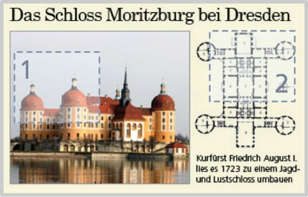

Einleitung
JPEG = Kompression durch Irrelevanzreduktion.Das Auge nimmt Helligkeit besser als Farbe wahr.
Bildaufbereitung
Transformation in geeigneteres Farbsystem YCC.Unterabtastung der Farbwerte. Blockbildung.
Diskrete Cosinus-Transformation
Bestimmen des Farbgrundwerts in einem Blockund der Abweichungen von diesem.
Quantisierung
Entfernen der irrelevanten Informationen durchStufenbildung im Wertebereich (verlustbehaftet).
Entropiekodierung
Redundanzreduktion: effizientere Speicherungdurch Entfernen von überflüssigen Daten.
Bedienelemente
Mit dieser Lernanwendung soll das JPEG-Kompressionsverfahren anschaulich gemacht werden. Die Bedienelemente werden beim Drücken des Hilfe-Symbols (rechts oben) erklärt.
Auswahl des Bildausschnitts
Das Bild unten soll in der ganzen Lernanwendung als Beispiel dienen. Es gibt zwei Ausschnitte, die verschiedene Typen von Bildern symbolisieren. Sie können in jedem Abschnitt, wo dies sinnvoll ist, mit dem Bild-Button (rechts unten) ausgewählt und umgeschaltet werden.
Ausschnitt 1
Natürlichfarbiges Bild mit Farbverläufen und Kanten (standardmäßig ausgewählt)
Ausschnitt 2
Strichzeichnung mit starken Farbkontrasten und harten Kanten
Grundlegendes Ziel von JPEG ist die Kompression, das heißt die Verringerung des Speicherplatzbedarfs. Das soll dadurch erreicht werden, dass irrelevante Daten weggelassen werden.
Irrelevant sind solche Daten, die vom menschlichen Auge ohnehin nicht wahrgenommen werden bzw. für das Erscheinungsbild nicht so bedeutsam sind. Dieses Vorgehen bezeichnet man daher als Irrelevanzreduktion: Man möchte mit weniger Informationen den gleichen oder einen genügend ähnlichen visuellen Eindruck erzielen (zum Vergleich die zwei Bilder).
Dadurch gehen allerdings Informationen unwiederbringlich verloren, das heißt, das JPEG-Kompressionsverfahren ist verlustbehaftet. Optimiert ist das Verfahren für natürlichfarbige Bilder.
Beim JPEG-Verfahren wird folgende Erkenntnis aus der Wahrnehmungspsychologie ausgenutzt: das menschliche Auge ist für Helligkeitsunterschiede sensibler als für Farbunterschiede.
Das kann hier ausprobiert werden:
|  |
|
Daher werden bei den Farbunterschieden Abstriche gemacht (vor allem bei den kleineren), um Speicherplatz zu sparen. Es sollen nur so viele Informationen übrig bleiben, wie nötig sind, um das Bild noch richtig zu verstehen. Die Einschätzung, wann dies noch der Fall ist, kann und muss der Nutzer selbst machen und zwar, indem er den Qualitätsfaktor entsprechend festlegt.
Das JPEG-Verfahren ist in vier Phasen gegliedert, in denen man dem Ziel der Irrelevanzreduktion schrittweise näher kommt:
1. Bildaufbereitung
Zunächst erfolgt die Umwandlung in ein zweckmäßigeres Farbsystem, dann die Unterabtastung der Farbwerte und die Blockbildung
2. Diskrete Cosinus-Transformation
Diese Phase dient dazu, den Farbgrundwert innerhalb eines Blockes zu bestimmen und die Abweichungen von diesem.
3. Quantisierung
In diesem Schritt werden die irrelevanten Informationen entfernt und gehen damit unwiederderbringlich verloren.
4. Entropiekodierung
Zuletzt werden die übrigen Daten effizienter gespeichert, indem redundante, d.h. mehrfach auftretende, Informationen entfernt werden.